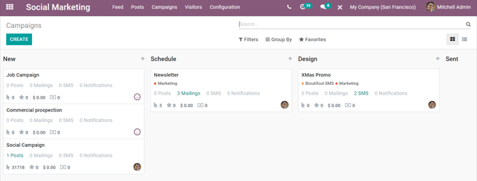

Página de campañas¶
Para acceder a una vista general completa de todas las campañas de marketing social, abra la aplicación y haga clic en desde el menú superior, se mostrará una página distinta con cada campaña en una vista kanban predeterminada.
Cada etapa en la vista kanban se puede editar haciendo clic en el icono de engranaje del lado izquierdo del + (signo de más) - situado a la derecha del título de la etapa.
Nota
El icono de engranaje solo aparece cuando el cursor se sitúa a la izquierda del + (signo de más). Al hacer clic en el icono de engranaje, un menú desplegable muestra las siguientes opciones: Plegar, Editar etapa y Eliminar.
Hacer clic en Plegar minimiza la columna de esa etapa específica. Se puede restaurar haciendo clic en la versión plegada en el tablero principal de Campañas en la vista kanban predeterminada.
Al seleccionar Editar etapa se muestra una ventana emergente en la que se puede modificar el nombre y la secuencia de la etapa. Recuerde hacer clic en Guardar si realiza modificaciones.
Para eliminar una etapa por completo, haga clic en Eliminar.
Nota
Para agregar una nueva etapa al flujo, vaya al lado derecho del tablero de Campañas, haga clic en agregar una columna, ingrese la información deseada y haga clic en agregar.
Truco
La misma información de la campaña de marketing social en el tablero de Campañas también se puede ver como una lista. Seleccione la opción lista ubicada debajo de la barra de búsqueda en la esquina superior derecha.
Crear campañas de marketing social¶
Abra la aplicación y seleccione Campañas en el menú principal.
En el tablero de Campañas puede crear una nueva haciendo clic en el signo de agregado rápido + (signo de más) ubicado en la esquina superior derecha de cada etapa en el flujo, visible en la vista kanban. También puede crear una campaña haciendo clic en nuevo en la esquina superior izquierda del mismo tablero.
Ambas opciones muestran una ventana de detalle para una nueva campaña directamente en el tablero de campañas al hacer clic.

Ingrese aquí el nombre de la campaña, el responsable y las etiquetas. Cuando termine de escribir todas las modificaciones, haga clic en Agregar para añadir la campaña a la base de datos.
Plantillas de campañas de marketing social¶
Desde la página de plantilla de campaña puede personalizar o modificar varios elementos y puede crear, modificar, enviar o programar varias formas de comunicación. A continuación se muestra una muestra de una plantilla de campaña completa.

Importante
Asegúrese de que la función campañas de correo se encuentra habilitada en la aplicación Marketing por correo electrónico, así la opción Enviar nuevo correo masivo aparecerá en las plantillas de campaña. Vaya a , active las campañas de correo y haga clic en Guardar.
Nota
Para que la opción Enviar SMS aparezca, debe instalar la aplicación Marketing por SMS en la base de datos.
Agregar contenido y comunicaciones a las campañas¶
Si instala las aplicaciones adecuadas y realiza los ajustes correspondientes (como se indicó anteriormente), hay cuatro formas de opciones de comunicación y contenido que se pueden agregar a las campañas. Cada una de estas opciones se muestra como botones en la esquina superior izquierda de la página de plantilla de campaña.
Enviar nuevo correo masivo: muestra una plantilla de correo electrónico en blanco en una página separada, desde allí puede personalizar el mensaje completamente de varias maneras.
Enviar SMS: muestra una plantilla de SMS en blanco en una página separada, en esta puede crear y configurar una comunicación SMS.
Enviar publicación social: muestra una plantilla de publicación social en blanco en una página separada, desde aquí puede crear una publicación y esta se aplica a las cuentas de redes sociales que ya están conectadas a la base de datos.
Notificación push: muestra una plantilla de publicación social similar en blanco en una página separada, sin embargo, las opciones de notificación push ya están preseleccionadas en el campo Publicar en .
Una vez que termina de crear cualquier forma de comunicación, Odoo vuelve a la página Plantilla de campaña y muestra el nuevo contenido en la pestaña correspondiente (es decir, correos, SMS, redes sociales y/o notificaciones push).
A medida que agrega contenido y comunicaciones a una campaña, aparecen pestañas para esos medios específicos, junto con una variedad de botones inteligentes analíticos (por ejemplo, ingresos, cotizaciones, leads…).
Estos botones inteligentes, ubicados en la parte superior de la plantilla, muestran diferentes métricas relacionadas con la campaña y sus diversas comunicaciones y contenidos. Cuando hace clic en cualquier botón inteligente, aparece una página separada específica para ese elemento particular de la campaña, lo que permite un análisis más rápido y organizado.
Nota
La aplicación Marketing social está integrada con otras aplicaciones de Odoo, como Ventas, Facturación, CRM y Sitio web.
Ver también
Campañas de marketing social¶
Las campañas de marketing social ayudan a las empresas a conectar con las plataformas de comercio electrónico y son útiles para presentar un producto nuevo a los clientes, explicar el valor de un producto o servicio, o para anunciar próximos eventos o lanzamientos de producto.
Con frecuencia, las campañas de marketing social más efectivas involucran varios canales para maximizar la distribución de contenido. La aplicación Marketing social de Odoo funciona como un centro de control para monitorear, planificar, publicar, realizar un seguimiento y analizar todos los diferentes contenidos y canales de contenido en un solo tablero.